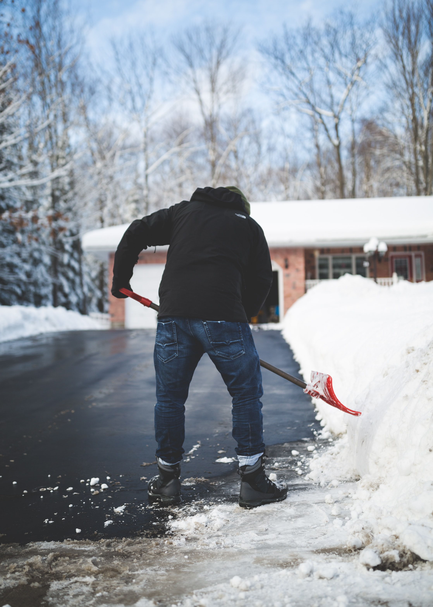

Varmemester
- Ejendomstilsyn
- Beboerservice
- Tilsyn varme / teknik / sprinkleranlæg
- Håndværkertilsyn
- Administration af drift / serviceaftaler
- Ad - hoc opgaver
- Ferieafløsning
Hvorfor skal vi tage hånd om varmemester opgaver ?
En varmemester tilser de mange tekniske instalationer såsom varme,
sprinklersystemer, ventilation, skaktsystemer m. m overholdes. En
jævnlig gennemgang at teknik og varme giver en stor driftsikkerhed,
samt god økonomisk drift.
Derfor - skal K.C.Ejendomsservice tage hånd om varmemester opgaver


Trappevask
- Hovedrengøring
- Polishbehandling
- Oliering
- Lakering
- Vinduespolering
- Ugentlig vask af trapper
- Månedlig afstøvning
Hvorfor skal vi tage hånd om trappevasken ?
Trappeopgangen er ejendommens ansigt udad til, da det er det
første ansatte, besøgende og lejere møder når de kommer til
ejendommen. En regelmæssig pleje og vask af trappeopgangen er
på længere sigt en god invistering, da det forlænger belægningens
levetid, og samtidig forskønner ejendommen, samt letter
vedligeholdet.
Derfor – skal K.C.Ejendomsservice tage hånd om trappevasken
Glatførebekæmpelse
- Saltning
- Snerydning
- Bortkørsel af sne
- 24/7 bemanding
- Abonnements ordning
- Priser pr. gang
- Priser pr. sæson
Hvorfor skal vi tage hånd om glatførbekæmpelsen ?
Mangelfuld snerydning og saltning kan betyde faldulykker,
adgangsproblemer, og udgøre en stor risiko for ansatte, besøgende og
lejere med store omkostninger til følge. For mange kan det være et
perifert område , der kan svært at planlægge og drifte rationelt.
Derfor - skal K.C.Ejendomsservice tage hånd om glatførbekæmpelsen

Grøn pleje
- Græsklipning
- Hækklipning
- Ukkrudtbekæmpelse
- Kantklipning
- Nyplantning
- Gødskning
- Græspleje
Hvorfor skal vi tage hånd om grøn pleje ?
En ejendom med grønt areal skal plejes, hvis det til stadighed skal
bibeholde udseende, sundhed og kvalitet. Vi opbygger detaljeret
plejeplaner for vedligeholdelsen af ejendommens grønne areal. En
plejeplan sikrer, at det grønne areal altid vil stå velplejet.
Derfor – skal K.C.Ejendomsservice tage hånd om den grønne pleje
Facade og Graffitisanering
- Fjernelse af graffiti
- Antigraffiti behandling
- Facaderens
- Isblæsning
- Lavablæsning
- Abonnement
- Tilsyn
Hvorfor skal vi tage hånd om Facade og graffitisanering ?
Med en af vores serviceordninger kan vi tilbyde at facaden på deres ejendom
jævnligt afrenses for graffiti.De holder selv øje med ejendommen og kontakter
K.C.Ejendomsservice når du opdager graffiti- hærværk. Vi rykker ud inden for 48
timer og sanerer.
Derfor - skal K.C.Ejendomsservice tage hånd om facaden